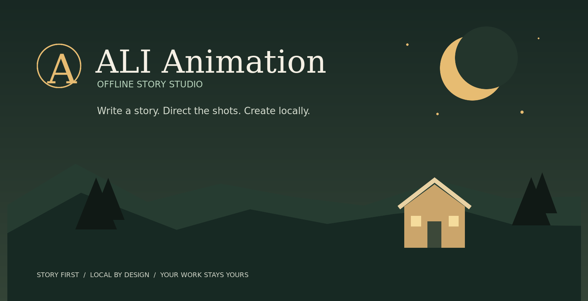

01 · Write
Add a title, story, logline, characters, genre, audience, visual style, and target duration.
Write a story, shape its characters, direct every shot, add voice and sound, then preview and export — through a simple visual workflow on your own computer.
No AI, LLM, account, API key, or network connection is required at runtime. Edit in the UI or import a JSON project.

Use the Studio's tabs to write and direct a scene-by-scene animatic. Upload your own media only if you want it; all project work stays in your browser.
Add a title, story, logline, characters, genre, audience, visual style, and target duration.
Build ordered shots. Choose camera framing, scene action, timing, transitions, narration, dialogue, and sound cues.
Review the timeline, save still frames, export a portable editable project, and record a supported WebM video.
Open the Samples menu in the Studio or import the project JSONs to learn the story format.
studio/The offline app, UI, project logic, format reference, sample JSON, and JavaScript tests.
docs/This portal, brand artwork, and static UI preview images.
skills/An optional legacy assistant/production toolkit, separate from the Studio and not required to use it.
outputs/Local exported deliverables; excluded from Git so generated media is not committed by accident.
Open the complete guide for installation steps, UI instructions, offline notes, troubleshooting, and a file-by-file explanation.
ALI Animation creates a lightweight procedural 2D animatic locally. It is not a full hand-drawn animation suite or professional nonlinear editor. Browser video/audio support and installed speech voices vary; for predictable narration, upload your own recording.
Read the project overview · Read detailed install notes · Read the JSON format